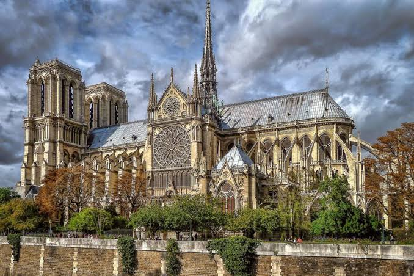

Про місто

Париж — столиця Франції, культурний та художній центр Європи, відомий своїми архітектурними шедеврами.
Чому я обрала це місто?
Париж надихає своєю естетикою, музеями світового рівня та затишними вуличними кав'ярнями.
Визначні місця та цікаві факти
- Ейфелева вежа — символ міста, спочатку мала бути тимчасовою спорудою.
- Музей Лувр — найвідвідуваніший художній музей у світі.
- Собор Паризької Богоматері (Нотр-Дам) — шедевр готичної архітектури.
Особиста оцінка
Оцінка: 9.5/10
Дізнатися більше: Париж у Вікіпедії